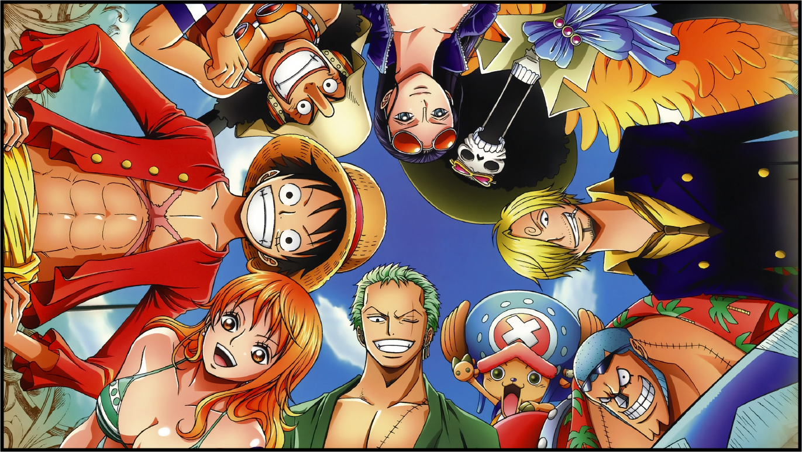
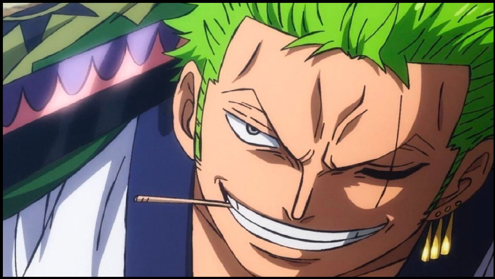
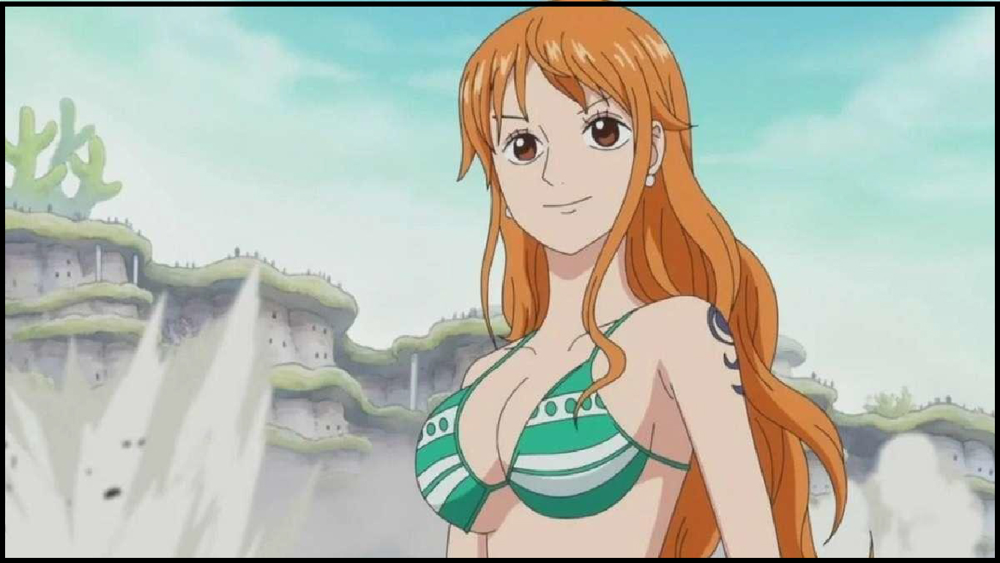
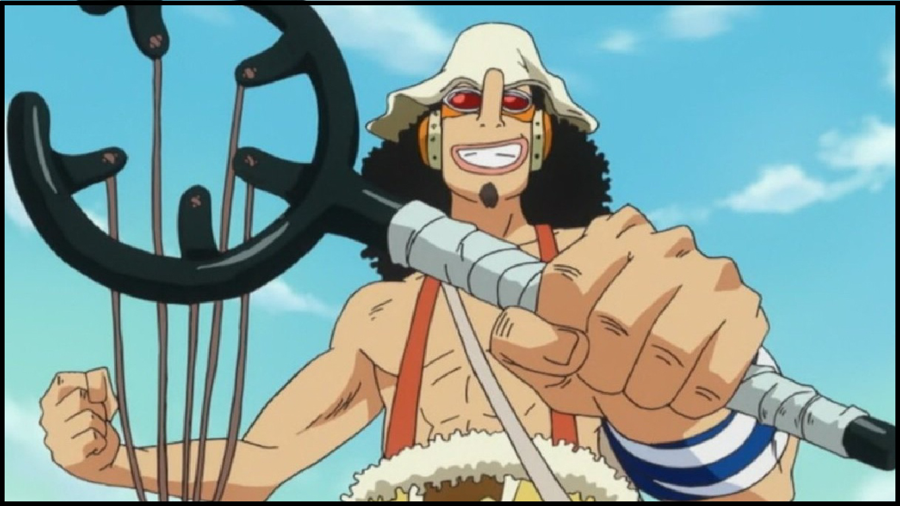
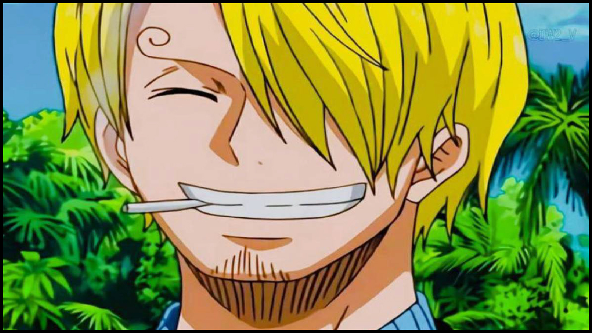
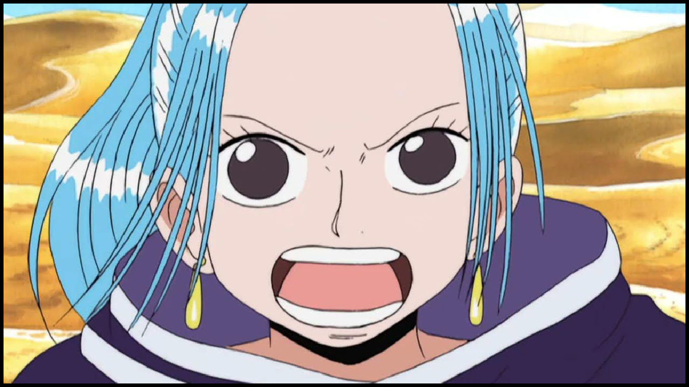
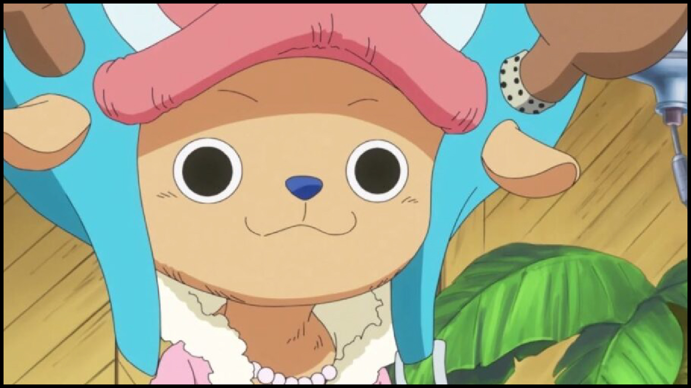
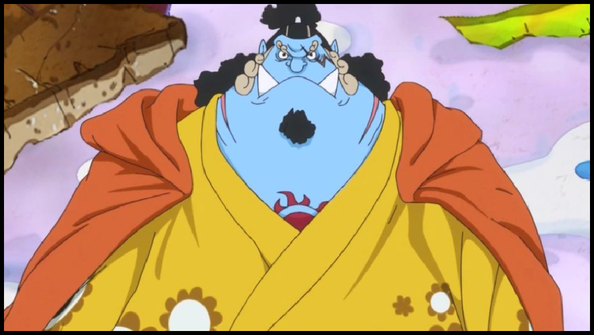
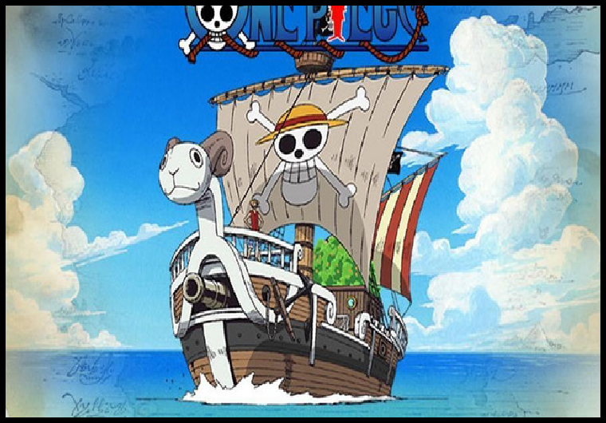
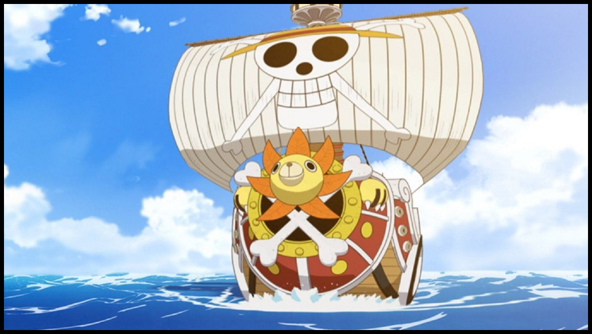

Personagens
Monkey D. Luffy

Quando criou a tripulação: Saga East Blue / Arco Romance Dawn / Episódios 1 e 2
Akuma no Mi: Gomu Gomu no Mi (Fruta da Borracha)
Função no grupo: capitão
Luffy é neto de Monkey D. Garp, Vice-Almirante da Marinha e arqui-inimigo de Gol D. Roger, que fez história no mundo como o Rei dos Piratas e o dono original do tesouro One Piece. Ainda assim, desde jovem Luffy quis seguir os passos dos piratas que admirava, como Shanks e o próprio Roger. Ainda criança, ingeriu acidentalmente a Gomu Gomu no Mi, fruta que lhe proporcionou poderes de borracha, habilidades que ele desenvolve consideravelmente no decorrer do anime, desenvolvendo diferentes golpes.
Já mais adulto, "Luffy do Chapéu de Palha", como ficou conhecido, fundou sua própria tripulação, os Piratas do Chapéu de Palha. Como capitão da equipe, Luffy percorre a Grand Line recrutando novos membros e enfrentando diferentes inimigos. Tudo isso em busca de alcançar seu sonho de se tornar o novo Rei dos Piratas e encontrar o tesouro One Piece. Neste caminho, o jovem pirata conquistou uma reputação mundial de ser quase insano por já ter atacado as três instalações governamentais mais importantes e escapado com vida.
Atualmente, Luffy faz parte do grupo conhecido como "Pior Geração", que reconhece os 12 piratas cujas ousadas ações contra o Governo Mundial lhe renderam uma recompensa acima de $100.000.000. A do Luffy é $3.000.000.000.
Roronoa Zoro
Quando entrou para a tripulação: Saga East Blue / Arco Romance Dawn / Episódio 3
Akuma no Mi: não possui
Função no grupo: espadachim
Primeiro pirata a ser recrutado por Luffy para os Chapéus de Palha - convite feito no episódio 2 e oficialmente aceito no 3 - Zoro também está entre os quatro integrantes mais poderosos do grupo, além de, assim como seu capitão, fazer parte da Pior Geração, com uma recompensa de $1.111.000.000. Enquanto Luffy sonha em se tornar o Rei dos Piratas, o sonho de Zoro é um dia ser o melhor espadachim do mundo.
Embora tenha uma personalidade que misture uma seriedade quase constante com um humor desajeitado, Zoro conquistou os fãs do anime e acabou se tornando, por vezes, alívio cômico dos episódios, devido a sua completa falta de direção. Além disso, sua amizade com Luffy é icônica. O pirata, inclusive, aceitou o convite para integrar os Chapéus de Palha após o capitão salvar sua vida.
É comumente visto com suas três espadas. Um dos mistérios em torno de Zoro surgiu após o salto temporal que ocorre depois da Saga Guerra de Marineford, quando o pirata apareceu com uma cicatriz que mantém seu olho esquerdo permanentemente fechado. A falta de explicações sobre o ferimento já provocou teorias diversas entre os fãs.
Nami
Quando entrou para a tripulação: Saga East Blue / Arco Orange Town / Episódio 6
Akuma no Mi: não possui
Função no grupo: cartógrafa e tesoureira
Antes de se tornar a terceira integrante dos Chapéus de Palha, Nami chegou a se infiltrar no grupo com a intenção de roubá-los. Vamos com calma! A jovem perdeu seus pais na guerra ainda bem criança e foi adotada por Bell-mère, uma mulher da Marinha. Tudo ia bem até que o pirata Arlong chegou ao vilarejo em que elas moravam, matou a mãe adotiva de Nami e sequestrou a garota para que ela pudesse fazer mapas para ele, ofício para o qual sempre mostrou aptidão.
Nami passou oito anos sob o domínio de Arlong, até que recebeu a missão de tentar roubar os Chapéus de Palha. Para sua surpresa, a tripulação de Luffy conseguiu se rebelar e vencer Arlong. Desde então, por volta do episódio 6, ela se uniu a Luffy e Zoro e passou a atuar como cartógrafa e tesoureira da equipe, tendo ainda como motivação seu sonho de fazer um mapa do mundo inteiro.
Junte a isso as habilidades de Nami como navegadora e seus poderes de mudar o clima, e podemos concluir que a adição da jovem à tripulação foi de fato de grande peso. Sua recompensa é de $366.000.000.
Usopp
Entra na Saga East Blue / Arco Vila Syrup (episódios 9 ao 18) Sai na na Saga Water 7 / Arco Water 7 (Episódios 227 ao 265)Retorna na Saga Water 7 / Arco Pós-Enies Lobby (episódios 313 ao 325)
Akuma no Mi: não possui
Função no grupo: atirador
A origem de seu nome ("Uso", em japonês, quer dizer "mentira" ou "falsidade"), seu nariz comprido e suas constantes histórias fantásticas fizeram com que Usopp ganhasse fama de mentiroso. Contudo, o pirata é um homem sensível, e suas narrativas incríveis, inclusive, surgiram como mecanismo de defesa. São uma forma que ele encontrou, ainda criança, de lidar com a morte da mãe e o abandono do pai.
Usopp passa a integrar os Chapéus de Palha durante no Arco Vila Syrup. Contudo, ele é sensível e inseguro por conta de seu passado. E isso faz com que ele abande os Chapéus de Palha por um tempo. Após entrar para o grupo com o sonho de se tornar um grande pirata, ele entra em conflito com Luffy e não se sente bom o suficiente para fazer parte da equipe. Usopp, contudo, não só retorna à equipe, no Arco Pós-Enies Lobby, como mostra grande desenvolvimento no decorrer do anime.
Após o salto temporal, o pirata demonstrou dominar nossas habilidades de combate. Além disso, ele conta com seu talento nato como atirador e com sua criatividade para desenvolver diferentes inventos, incluindo o Clima-Tact, artefato com o qual Nami controla o clima. Não à toa, a recompensa de Usopp, que já foi de $500.000.000, atualmente é de $200.000.000.
Sanji
Quando entrou para a tripulação: Saga East Blue / Arco Baratie / Episódio 30
Akuma no Mi: não possui
Função no grupo: cozinheiro
Sanji é o terceiro filho da família nobre Vinsmoke, e cresceu em meio a maus tratos de seus parentes próximos. Seus irmãos faziam bullying com ele na infância menosprezando sua atitude de alimentar aqueles que seu pai julgava inferiores e a quem não dava atenção. O patriarca via o filho como a vergonha da família. Sanji renunciou seu título de príncipe do Reino Germa e cortasse os laços com todos quando tinha apenas oito anos de idade.
O menino atravessou a Red Line em direção ao East Blue, onde trabalhou como cozinheiro em um navio, até ser salvo de um naufrágio pelo sous-chef Zeff. Sanji acabou se tornando aprendiz de Zeff por anos, no restaurante em que, um dia, conhece Luffy. Após Sanji entrar em uma briga com um tenente da Marinha por desperdiçar comida, ele acaba alimentando um fugitivo que tinha fome às escondidas. O capitão dos Chapéus de Palha vê o ato gentil e o convida para integrar a tripulação.
Após diversos conflitos com diferentes inimigos, Sanji aceita o convite de Luffy apenas no final do Arco Baratie, no episódio 30. Sua motivação é seu sonho de encontrar o suposto paraíso dos chefs, All Blue. Esse lendário mar místico seria o ponto de encontro de East Blue, West Blue, North Blue e South Blue, e contaria com com vida selvagem dos quatro oceanos. Quinto integrante do grupo, no qual passou a atuar como cozinheiro, Sanji se destacou rapidamente. Atualmente figura como um dos quatro melhores lutadores da tripulação - junto a Luffy, Zoro e Jinbe - e detentor da terceira maior recompensa da equipe, no valor de $1.032.000.000.
Nefertari Vivi
Quando entrou para a tripulação: Saga Alabasta / Arco Whisky Peak / Episódios 64 ao 67
Akuma no Mi: não possui
Função no grupo: -----
Vivi foi apresentada em One Piece como uma das principais antagonistas do Arco Reverse Mountain. Ela era uma caçadora de recompensas conhecida como Miss Wednesday e trabalhava para o grupo criminoso Baroque Works. Em uma reviravolta, durante os eventos do Arco Whisky Peak, Vivi revela ser a princesa de seu país, conta que estava trabalhando como espiã contra o Baroque Works, e se une aos Piratas do Chapéu de Palha.
Vivi deixou a tripulação após eles conseguirem vencer o Baroque Works, decidida a ficar em seu país e reconstrui-lo. Contudo, durante quase toda a Saga Alabasta, ela viajou com os Chapéus de Palha e lutou ao seu lado. Por este motivo, ela e seu pet Karoo são considerados membros honorários da tripulação. A personagem ganha espaço novamente no Arco Levely (ou Reverie), entre os episódios 879 e 889, mas apareceu em vários outros no decorrer do anime, sempre como aliada da equipe de Luffy.
Tony Tony Chopper
Quando entrou para a tripulação: Saga Alabasta / Arco Ilha Drum / Episódio 91
Akuma no Mi: Hito Hito no Mi (Fruta Humano-Humano)
Função no grupo: médico
Sexto integrante dos Chapéus de Palha e um dos poucos que nasceram na Grand Line, Tony Tony Chopper era uma rena comum até ingerir a fruta Hito Hito no Mi, que lhe deu não apenas características humanoides, como também grande inteligência e a capacidade de alterar a forma física de seu corpo. Após desastrosas primeiras interações com os humanos, Chopper foi resgatado pelo Dr Hiriluk, que ajudou a jovem rena a se tornar um médico, sendo ensinado ainda por seis anos pela Dra. Kureha.
Descontraído, é um dos primeiros a se juntar às brincadeiras de Luffy e Usopp. Seu primeiro contato com o grupo, contudo, não foi exatamente positivo. Sua desconfiança com humanos foi apenas acentuada pelas brincadeiras de Luffy e Sanji sobre cozinhá-lo. As habilidades médicas de Chopper, porém, fizeram Luffy convidá-lo para integrar a tripulação, convite que ele aceita no final do arco Ilha Drum, no episódio 91, motivado também pela lembrança do desejo do Dr. Hiruluk de que ele navegasse pelo mundo e ampliasse seus horizontes médicos.
Conforme controlou cada vez mais os poderes que a Hito Hito no Mi lhe proporcionou, ele já conseguiu assumir sete formas diferentes. Crescer seus pelos, aumentar seus músculos, diminuir seu peso e aprimorar sua velocidade são alguns dos recursos que consegue alcançar a partir dessas transformações. Sua recompensa é de $1000, por ele ser confundido com um mascote frequentemente.
Nico Robin

Entra no final da Saga Alabasta / Arco Alabasta (Episódios 92 ao 130); na Saga Water 7 / Arco Water 7 (Episódio 227 ao 265)
Retorna ainda na Saga Water 7 / Arco Enies Lobby (episódios 266 ao 312)Akuma no Mi: Hana Hana no Mi (Fruta da Flor)
Função no grupo: arqueóloga e historiadora
Embora tenha sido apresentada antes de Chopper, Nico Robin inicialmente era uma antagonista secundária da Saga Alabasta, período em que era conhecida como Miss All Sunday. Ela só passou a integrar a tripulação de Luffy já depois da entrada do médico rena, chegando a sair do grupo uma vez e reintegrando a equipe oficialmente apenas no final do Arco Enies Lobby.
Sétima integrante dos Chapéus de Palha, Nico Robin atua como a arqueóloga e historiadora do grupo. Única sobrevivente da ilha de Ohara, a jovem é atualmente a única pessoa capaz de ler Poneglyphs, ato considerado um risco para o Governo Mundial. Considera que seus colegas de tripulação não apenas a salvaram, mas também reviveram seu sonho de alcançar a liberdade para viajar o mundo estudando seus mistérios. Sua recompensa é de $930.000.000.
Nico alcançou um incrível preparo físico durante sua vida de batalhas e fugas. Além disso, ela comeu a fruta Hana Hana no Mi, que lhe concedeu a habilidade de replicar partes de seu corpo em qualquer superfície, sejam objetos, outros seres vivos ou em seu próprio corpo.
Franky

Quando entrou para a tripulação: Saga Water 7 / Arco Pós-Enies Lobby / Episódio 322
Akuma no Mi: não possui
Função no grupo: carpinteiro
Na Saga Water 7, conhecemos aquele que se tornaria o oitavo pirata a fazer parte da tripulação de Luffy, Franky. Contudo, assim como Nico Robin, o personagem começa sua trajetória como um antagonista. Um ciborgue de 36 anos, Franky é o líder da Família Franky, que trabalhava com o desmantelamento de navios.
No decorrer do arco Water 7, o grupo e os Chapéus de Palha se tornam aliados. Depois disso, a Família Franky permite que Franky se una à tripulação, para um dia realizar seu sonho de construir e dirigir um navio poderoso o suficiente para dar a volta ao mundo.
No grupo, Franky se tornou um dos integrantes mais atenciosos e maduros, embora seu jeito meio excêntrico passe a ideia errada inicialmente. Sempre preocupado com seus companheiros, ele arrisca sua vida para proteger a equipe e quaisquer pessoas que são perseguidas, uma vez que, para ele, ninguém deve ser julgado por ser quem é. Sua recompensa é de $394.000.000.
Brook

Quando entrou para a tripulação: Saga Thriller Bark / Arco Thriller Bark / Episódio 381
Akuma no Mi: Yomi Yomi no Mi (Fruta Revive-Revive)
Função no grupo: espadachim e músico
Nono pirata a integrar a tripulação dos Chapéus de Palha, Brook foi encontrado por Luffy e sua equipe em uma ilha fantasma conhecida como Thriller Bark, no Triângulo Florian. O pirata viveu lá por quase 50 anos após a morte de sua tripulação. Sua antiga equipe foi vítima de doenças e diferentes inimigos. Brook sobreviveu apenas graças à fruta Yomi Yomi no Mi, que lhe proporcionou uma segunda vida como um esqueleto imortal.
Brook acaba ajudando Luffy e sua equipe a lutar contra o perigoso Warlord do mar Gecko Moria, e ao final do arco Thriller Bark, episódio 381 mais especificamente, o músico pede a Luffy para entrar na tripulação, pedido aceito de imediato pelo capitão. Na tripulação, além de músico, ele é o segundo espadachim - com Zoro sendo o primeiro. Sua recompensa de $383.000.000.
Por baixo de sua personalidade excêntrica e cômica, Brook é extremamente sensível. A vontade de entrar para a tripulação se justifica tanto na sua paixão por navegar quanto pelo seu sonho de um dia reencontrar o filhote de baleia Laboon, adotado como mascote de sua antiga tripulação.
Jinbei
Quando entrou para a tripulação: Saga Yonkou / Arco Whole Cake / Episódio 833
Akuma no Mi: não possui
Função no grupo: timoneiro
Décimo integrante dos Piratas do Chapéu de Palha, Jinbei (ou Jinbe) é um homem-peixe da espécie tubarão-baleia. Durante a aclamada Saga Guerra de Marineford, no episódio 430, ele conhece Luffy e sua equipe e acaba os ajudando no mortal confronto.
O capitão dos Chapéu de Palha convida Jinbei para integrar a tripulação no episódio 568, no final da Saga Ilha dos Homens-Peixe. Apenas algum tempo depois do salto temporal de dois anos, ele aceita o convite. No Arco Whole Cake, episódio 833, Jinbei se alia à tripulação para impedir o plano dos Novos Piratas Homens-Peixe de fazerem um golpe de estado contra o Reino Ryugu. A partir daí, acaba integrando o grupo.
Seu grande sonho é, um dia, alcançar a coexistência pacífica e igualitária entre homens-peixe e humanos, como era o sonho de seu ex-capitão Fisher Tiger. Sua recompensa é de incríveis $1.100.000.000e ele atua como timoneiro da tripulação.
Going Merry
East Blue
O Going Merry foi projetado por Merry, um empregado da mansão de Kaya e foi entregue ao bando após o término da saga do Capitão Kuro na Vila Slope. Após o término da saga de Arlong o navio ganhou algumas laranjeiras do pomar de Bell-mère.
Skypiea
O navio sofreu grandes danos ao subir e descer de Skypiea, esses danos foram tão profundos que a quilha do navio ficou partida ao meio.
Water 7
Na saga de Water 7, foi dito que o navio já não possuia conserto e que ele não chegaria na próxima ilha. Luffy fala com Usopp que eles vão trocar de navio, mas, Usopp não acredita .Aí começa o conflito entre os dois. Nota-se que, durante a luta ,o navio fica triste por causa do desentendimento dos dois tripulantes.
Enies Lobby
Após os Chapéus de Palha partir para Enies Lobby, o carpinteiro Iceburg achou o Merry, que havia sido levado pelo Aqua Laguna e o consertou, depois o navio foi sozinho pegar os Chapéus de Palha em Enies Lobby e na volta o navio se partiu ao meio, então foi queimado, após alguns dias Franky construiu o Thousand Sunny que substituiu o Merry. Ao construir o Thousand Sunny, Franky explica que o navio carregaria o espírito do Merry, que nos é revelado algum tempo depois através do Mini-Merry , que Usopp acredita que o é uma reencarnação do Going Merry só que em uma forma menor.
Thousand Sunny
Thousand Sunny é o segundo navio dos Chapéu de Palha, e atualmente seu principal meio de transporte após a destruição do Going Merry. O navio foi criado por Franky com madeira de uma árvore rara chamada Adam. Segundo Franky, a alma do Going Merry reside nesse navio.
O Thousand Sunny é o "brig-sloop" que possuia dois mastros para melhor precisão para a navegação, para dar a extrema capacidade de manobra do navio. A escultura da proa, é uma cabeça de um leão com sua juba em forma de pétalas de flores. Devido a isso, o leão foi confundido com um girassol durante a construção do navio.